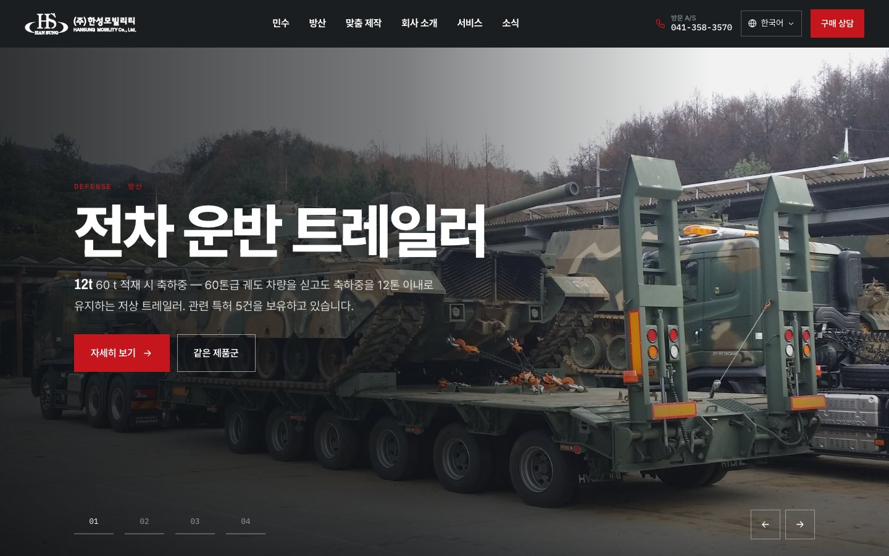

HOMEPAGE VERSIONS
홈페이지 버전 비교
메인 페이지 시안을 버전별로 모았습니다. 메뉴·제품 상세·회사 소개 등 하위 페이지는 모든 버전이 함께 씁니다. 언어를 골라 각 버전을 열어 보세요.
작업 기록
- 2026-10-16메인 V2 추가 · 버전 비교 페이지
KRONE·Wingliner·Versus-Omega 화면 구성 참고. 하위 페이지는 V1과 공유 - 2026-10-16보강 1단계
개인정보처리방침·자료실·부품 문의·FAQ·수출 지도·사양 탭·제품 영상·YouTube - 2026-10-13모바일 최적화
하단 고정 상담 버튼, 카드 가로 넘기기, 3D 휴대폰 구도·해상도 - 2026-10-13언어별 메뉴 · 연혁 개편
메뉴 4개 언어 표기, 연혁을 이정표 6개로, 사선 테이프 제거 - 2026-10-13디자인 보강
섹션 번호·워터마크·도면 격자·제품명 띠·스크롤 진입 효과 (git 태그 before-redesign 이전/이후) - 2026-10-133D 도면 첫 화면
Three.js + Anime.js, 도면 → 분해 → 실물 → 조립 - 2026-10-121차 제작
4개 언어 정적 사이트, 메인 + 메뉴 7개 + 제품 상세 11종 - 2026-10-12컨셉 기획안 v0.1
리서치, "숫자로 증명하는 트레일러"
되돌리기: 프로젝트 git — 개편 전 before-redesign 태그, 이후 작업은 redesign 브랜치에 단계별 커밋.